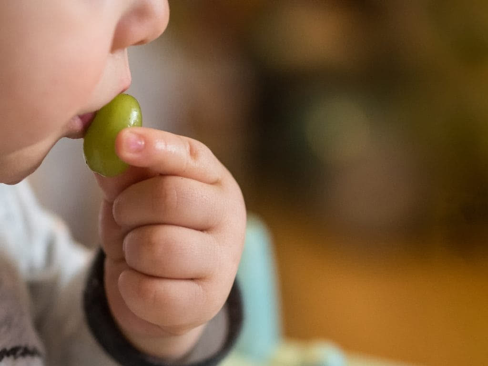
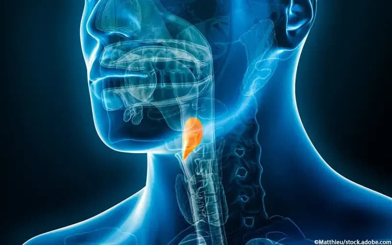
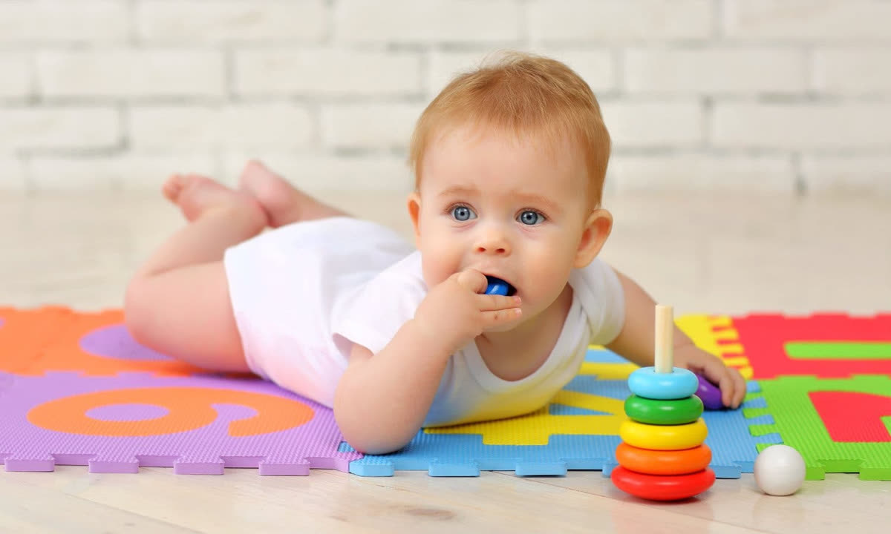
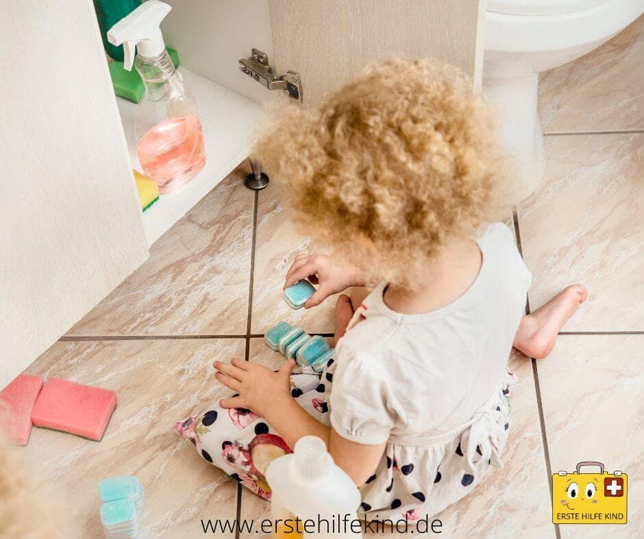
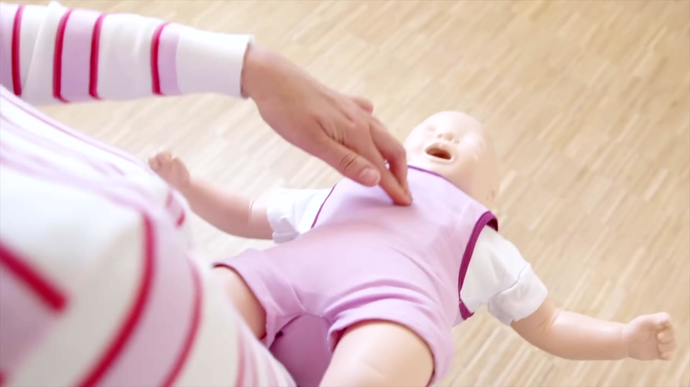
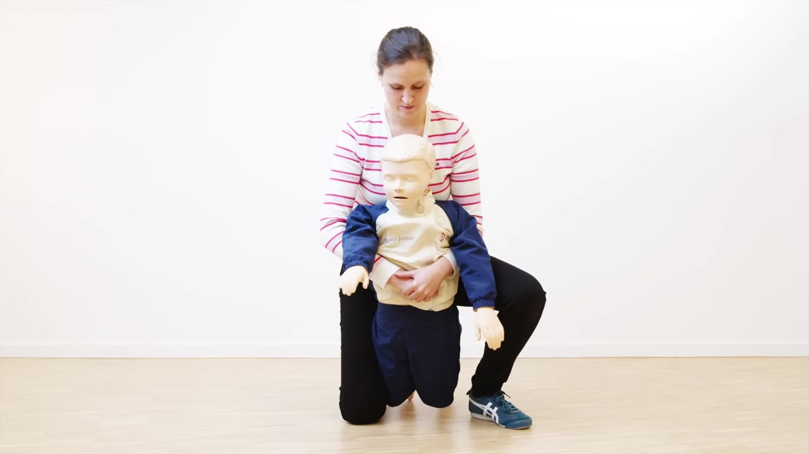
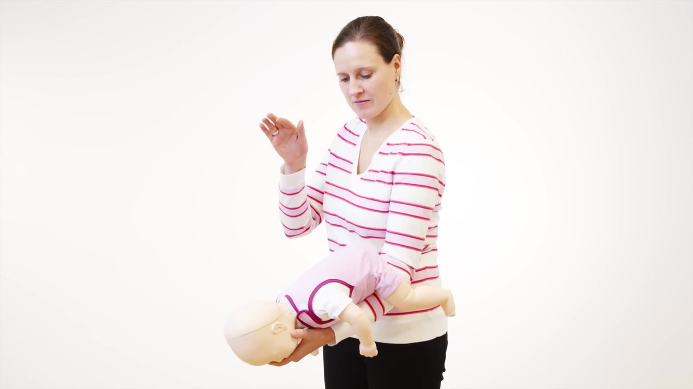
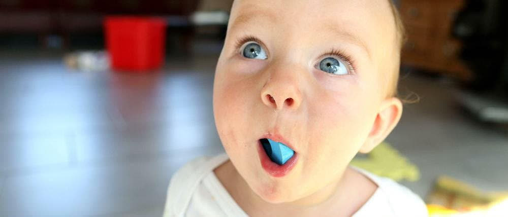

Erste Hilfe · Kindernotfall
Erkennen. Handeln. Leben retten.
Notruf: 112
Einleitung
Ersticken bedeutet, dass der Körper nicht genügend Sauerstoff bekommt.
Normalerweise gelangt die Luft durch Mund oder Nase über die Luftröhre in die Lunge.
Mund / Nase
Luftröhre
Lunge
Wenn die Atemwege blockiert sind, kann die Luft nicht mehr richtig in die Lunge gelangen.
✕ Atemwege blockiert
Keine Luft in der Lunge
Dadurch bekommt der Körper zu wenig Sauerstoff.

Erste Hilfe bei Ersticken · Kinder & Babys
02
Erkennen
Ein Kind, das zu ersticken droht, kann folgende Symptome zeigen:
Plötzlicher Husten oder Würgen.
Atemnot und schnelle Atmung.
Das Kind kann nicht sprechen oder weinen.
Es bekommt möglicherweise keine Luft.
Die Haut und Lippen können blau oder grau werden (Zyanose).
Das Kind kann panisch werden.
Bei schwerem Sauerstoffmangel kann es bewusstlos werden.
Erste Hilfe bei Ersticken · Kinder & Babys
03
Risiko
Kinder haben ein höheres Risiko zu ersticken, weil:

1
Ihre Atemwege noch kleiner und enger sind als bei Erwachsenen.
2
Sie Gegenstände häufig in den Mund nehmen.
3
Sie beim Essen manchmal gleichzeitig spielen oder lachen.
4
Sie noch nicht richtig kauen und schlucken können.
5
Sie kleine Gegenstände manchmal versehentlich einatmen.
Erste Hilfe bei Ersticken · Kinder & Babys
04
Gefahren
Weintrauben, Nüsse, Popcorn, Bonbons und harte Lebensmittel.
Spielzeugteile, Münzen, Knöpfe und kleine Bauteile.
Können in die Atemwege gelangen (Aspiration).
Zum Beispiel durch Plastiktüten oder das Zudecken von Mund und Nase.

Erste Hilfe bei Ersticken · Kinder & Babys
05
Aufgaben der Pflegefachkraft bei Erstickungsgefahr
Warum?
Um die Eltern über Erstickungsgefahren zu informieren.
Um Unfälle bei Kindern zu vermeiden.
Um die Gesundheit und das Leben des Kindes zu schützen.
Um die Eltern für mögliche Gefahren zu sensibilisieren.
Erste Hilfe bei Ersticken · Kinder & Babys
06
Aufgaben der Pflegefachkraft
Sie erklärt den Eltern die Gefahren des Erstickens.
Sie zeigt, wie Eltern Erstickungsunfälle verhindern können.
Sie demonstriert wichtige Erste-Hilfe-Maßnahmen.
Sie hört den Eltern zu, nimmt ihre Ängste und Sorgen ernst und gibt ihnen Sicherheit und Vertrauen.
Erste Hilfe bei Ersticken · Kinder & Babys
07
Womit?

Informationsbroschüren
Bilder und Videos
Praktische Demonstrationen
Persönliche Beratungsgespräche
Erste-Hilfe-Material
Erste Hilfe bei Ersticken · Kinder & Babys
08
Erste Hilfe bei Kindern
1
Ruhe bewahren und das Kind ansprechen.
2
Wenn es kräftig hustet: zum Husten auffordern.
3
Wenn es nicht mehr richtig atmen kann: 112 anrufen lassen.
4
Bis zu fünf kräftige Schläge zwischen die Schulterblätter geben.
5
Wenn das nicht hilft: bis zu fünf Oberbauchkompressionen (Heimlich-Manöver) durchführen.
↻
Abwechselnd wiederholen, bis der Fremdkörper herauskommt oder Hilfe eintrifft.

Erste Hilfe bei Ersticken · Kinder & Babys
09
Video · Kind über 1 Jahr
1
Kind nach vorn beugen
2
5 Schläge zwischen die Schulterblätter
3
5 Oberbauchkompressionen
↻
Im Wechsel wiederholen
Video: Kindernotfall Bonn · Universitätsklinikum Bonn
10
Erste Hilfe bei Kindern

1
Das Baby mit dem Kopf tiefer halten.
2
Bis zu fünf Rückenschläge geben.
3
Wenn es nicht hilft: bis zu fünf Brustkorbkompressionen geben.
Keine Oberbauchkompressionen beim Baby!
Erste Hilfe bei Ersticken · Kinder & Babys
11
Video · Baby unter 1 Jahr
1
Auf den Unterarm, Kopf nach unten
2
Kopf am Kiefer stützen, nicht am Hals
3
5 Schläge zwischen die Schulterblätter
4
Umdrehen: 5 Brustkompressionen
Video: Kindernotfall Bonn · Universitätsklinikum Bonn
12
Beim Säugling nur Rückenschläge und Brustkompressionen.
Notfall
112
Erste Hilfe bei Ersticken · Kinder & Babys
14
Achtung
Nur einen Fremdkörper entfernen, wenn man ihn deutlich sehen und sicher greifen kann.
Niemals blind mit den Fingern in den Mund greifen.

Erste Hilfe bei Ersticken · Kinder & Babys
15
Quellen
Erste Hilfe bei Ersticken · Kinder & Babys
16
Ruhig bleiben, richtig handeln – jede Sekunde zählt.
Im Notfall: 112
Fragen?